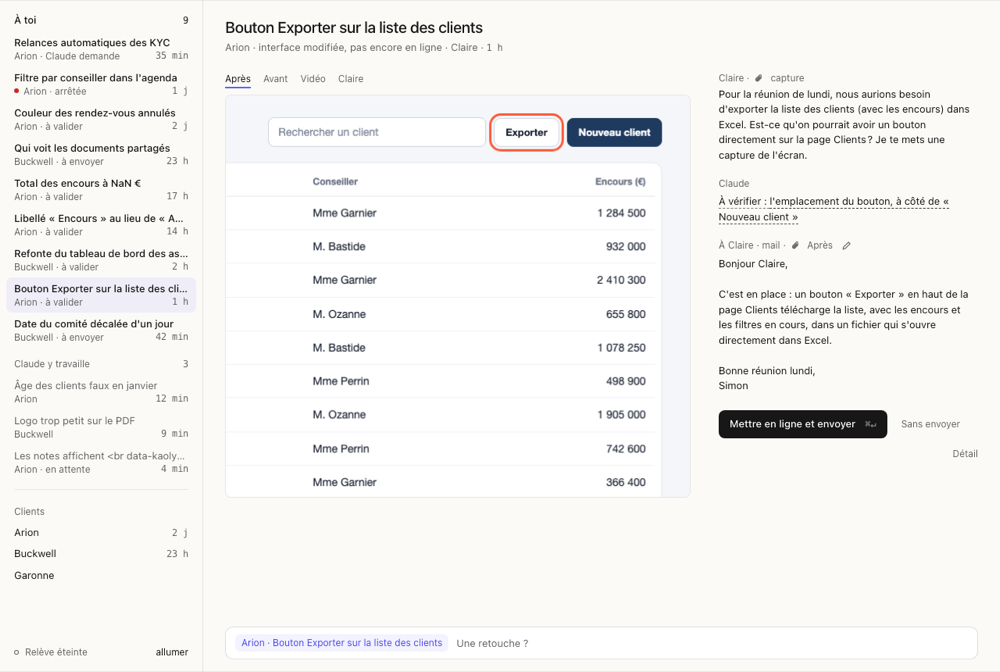
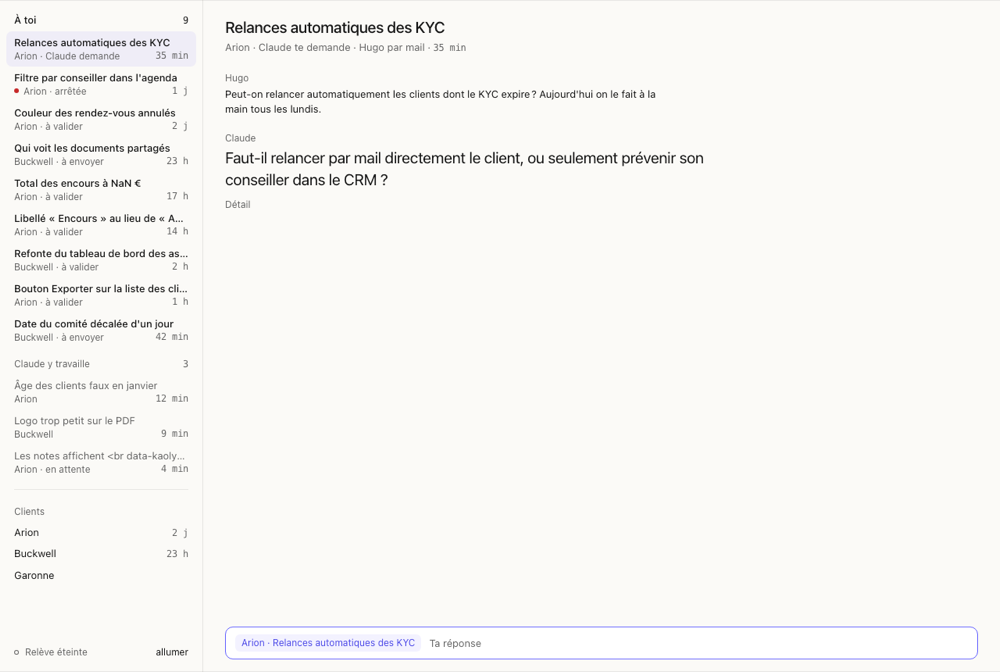
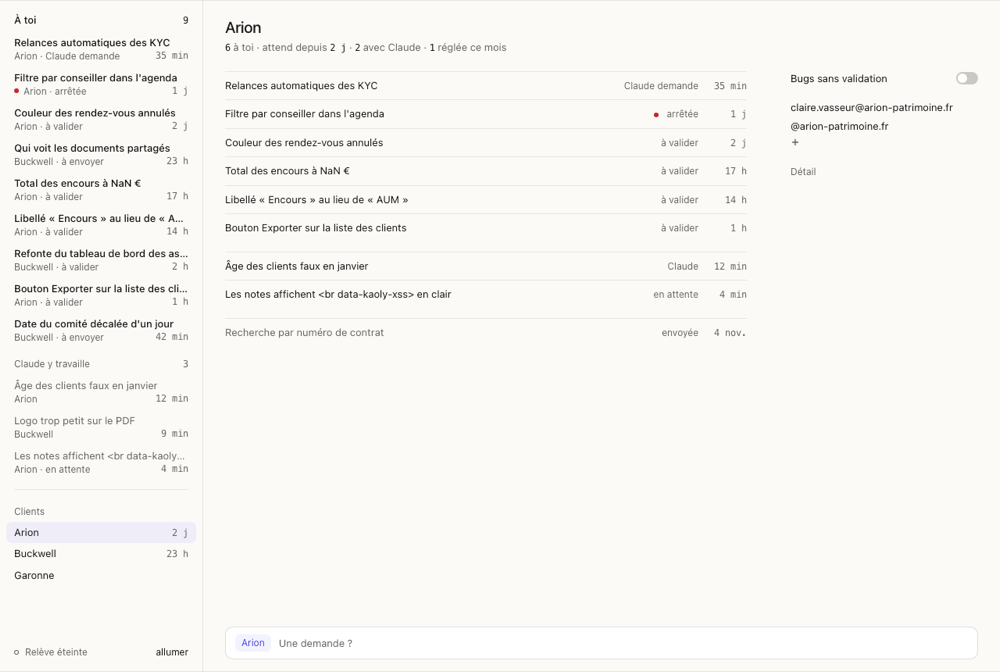
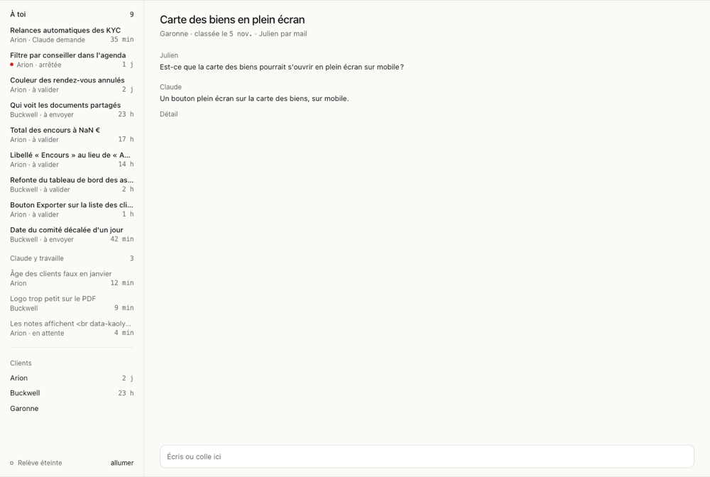
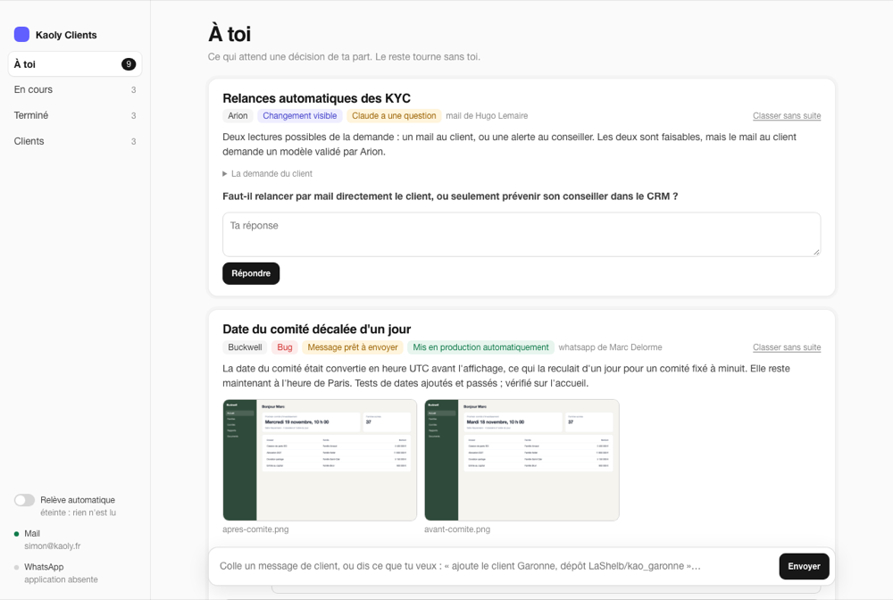

L'application tient sur une fenêtre : ce qui t'attend à gauche, une demande à droite, la preuve sous les yeux, un geste pour valider. Note finale 93,7 sur 100, page de départ à 10,2 sur 40.




Sans risque, sur le jeu d'essai (faux Claude, faux GitHub, mail vers ton propre Mac, relève éteinte) :
cd ~/Desktop/code/kaoly_client_handling D=$(mktemp -d) cp -R eval/jeu/. "$D" KAOLY_CLIENTS_DIR="$D" \ KAOLY_WA_DB=/nonexistent PORT=4300 \ PATH="$PWD/eval/faux:$PATH" \ bun server.ts
Puis http://127.0.0.1:4300 dans le navigateur, ctrl C pour arrêter. À essayer : ↓ ↑ pour descendre la file, ← → pour passer d'Après à Avant, espace pour la preuve en plein écran, ⌘↵ puis « Annuler » sur la ligne de la demande, « ok » dans la barre (⌘K).
Ton application, sur tes vraies données : quitte-la (⌘Q), lance sh app/build.sh, rouvre-la. Tes config.json et tickets.json actuels se relisent tels quels (vérifié sur des copies au format d'origine, un fichier par état).
| Question | Ma recommandation |
|---|---|
| Un mot d'accord envoie. « ok » ou « envoie » dans la barre valent le bouton plein d'une demande à valider ou à envoyer, avec les mêmes 5 s pour annuler. | Garder. Repli prêt en une ligne si tu préfères le seul bouton. |
| Ce qui part avec le mail. Par défaut, seule la capture « Après » est jointe ; tu peux la retirer d'un clic. | Garder : le client voit le résultat, pas l'ancien écran. |
| La puce de la barre. Avec une demande ouverte, ce que tu tapes va à cette demande. Coller le mail d'un autre client sans retirer la puce le transmettrait comme retouche. | Garder ; la puce est visible et Échap la retire. À revoir si ça t'arrive. |
Le badge du Dock fenêtre fermée. Écrit, compilé, pas encore vu : build.sh n'a pas été lancé cette nuit. | Lancer le build ce matin, fermer la fenêtre, regarder si le compte bouge. |
| Rejuger les idées refusées. Trois idées avaient été refusées face à la note d'un autre juge. | fait Rejugées avant et après par les mêmes juges : le fil à une seule place entre, les deux autres restent dehors. |
| Une retouche qui partirait seule. Tu demandes une retouche sur une demande à valider, puis tu actives « Bugs sans validation » pour ce client. | fait Une demande que tu as déjà relue ne repart plus seule en ligne (e2f6bf9). Le message au client attend toujours ton clic. |
Trois objets en tout : la demande, le client, les arrivées. « En cours » et « réglé » sont des moments d'une demande, pas des pages.
| Séparé avant | C'est la même question | Donc réuni |
|---|---|---|
| « Mettre en production » puis « Envoyer », en deux passages | « c'est bon, on le dit au client » | preuve, message et un seul bouton sur le même écran |
| résumé de Claude, captures, message au client | le même récit, pour toi puis pour le client | une colonne de lecture à côté de l'image |
| quatre étiquettes : client, nature, état, production | « où en est-on ? » | une phrase grise sous le titre |
| À toi, En cours, Terminé | trois moments du même objet | deux groupes d'une liste ; le passé va chez le client |
| page Clients, Terminé, réglages | tout appartient au client | une fiche client |
| interrupteur, état du mail et de WhatsApp, tri | « par où ça entre » | le pied de la colonne, muet quand tout marche |
| zone de retouche de chaque carte, réponse à une question, barre | « écrire à Claude » | il ne reste que la barre |
| Part | Ce qu'elle mesure | Final |
|---|---|---|
| Automatique | Dans la page, à 1280 × 860 : mots que l'interface écrit elle-même, nombre d'encadrés, tailles et graisses, contraste, petite fenêtre 760 × 560, gestes au clavier, rien d'envoyé avant 5 s. Note 0 si un essai échoue ou si un texte de client devient du code. | 39,7 / 40 |
| Juge | 30 questions oui ou non sur les captures, à ta place : hiérarchie, regroupement, sobriété du texte, décision en un geste, lecture d'un client, finition. Moyenne de deux juges (52 et 56). | 54 / 60 |
La baisse de 97,7 à 90,7 vient du changement de juge, pas d'un recul de l'écran. 97,7 est le dernier passage du premier juge ; 89,7 puis 90,7 sont les premiers du second, plus sévère. Entre les deux, la note automatique reste à 39,7, le banc reste vert, et les « non » du second juge visent des choses déjà là au cycle 4 : la place du fil, « Bugs sans validation », un titre du jeu d'essai qui contient du code.
À confirmer : le second juge n'a pas noté les captures du cycle 4. C'est la seule preuve directe qui manque.
Pas bloquant : plus aucune décision ne compare deux juges. Chaque idée est notée avant et après par les mêmes deux juges, sur les mêmes vues ; c'est ainsi que le fil à une seule place est entré.
À confirmer : ce que la note ne dit pas.
Pas bloquant : le banc d'essai de bout en bout et les règles de sécurité sont vérifiés à chaque fusion ; le juge ne sert qu'à choisir entre deux écrans.

Cinq directions écrites en parallèle, une gardée, puis cinq cycles de cinq idées. Une idée de design entrait si elle gagnait 1,5 point sur le tronc ; depuis le changement de juge, deux juges la notent avant et après sur les mêmes vues, et elle entre si les deux la disent meilleure ; une idée de fonction entre si le banc reste vert et que l'écran ne recule pas.
| Cycle | Idée | Note | Verdict |
|---|---|---|---|
| 1 | Le fil ne dit rien deux fois | 97,7 | fusionnée |
| 1 | La barre trouve avant de demander à Claude | 97,7 | fusionnée |
| 1 | « Relancer » fait vraiment repartir le travail | 97,7 | fusionnée |
| 1 | Fiche client sur la grille de la demande | 95,7 | refusée |
| 1 | La décision et son bouton se touchent | 91,7 | refusée |
| 2 | Un message pas parti se voit et reste | 97,7 | fusionnée |
| 2 | La barre ne déclenche rien par erreur | 97,7 | fusionnée |
| 2 | Fiche client = la colonne filtrée sur lui | 95,7 | refusée |
| 2 | Preuve cadrée sur ce qui a changé | 95,7 | refusée |
| 2 | Petite fenêtre : rien de coupé | 93,7 | refusée |
| 3 | Petite fenêtre finie, réglages réduits | 97,7 | fusionnée |
| 3 | Preuve lisible, plus de trou ni de vide | 97,7 | fusionnée |
| 3 | « Annuler » sur la ligne de sa demande, ⌘Z | 95,7 | fusionnée |
| 3 | Ce que le client reçoit se voit en entier | 95,7 | fusionnée |
| 3 | Une panne réglable repart seule | 95,7 | fusionnée |
| 4 | La preuve s'arrête sur des lignes entières | 97,7 | fusionnée |
| 4 | La barre fait le geste (« ok », « classe ») | 97,7 | fusionnée |
| 4 | Fermer la fenêtre ne coupe rien | 97,7 | fusionnée |
| 4 | Le fil se lit pareil partout | 95,7 | refusée |
| 4 | À gauche seulement ce que tu tranches | 95,7 | refusée |
| 5 | La capture du client dans le cadre de la preuve | 93,7 | fusionnée |
| 5 | Ta parole reste dans le fil, question en un clic | 91,7 | fusionnée |
| 5 | Un seul fil, à une seule place | 52→52 · 54→56 | fusionnée |
| 5 | Une seule règle de taille pour la preuve | 52→50 · 54→54 | refusée |
| 5 | Un état, un mot, dans la phrase d'état | 56→54 · 54→54 | refusée |
Les trois dernières, d'abord refusées face au 97,7 de l'autre juge, ont été rejugées sur le tronc : note des deux juges sur 60, avant → après, mêmes vues. Le fil entre. La règle de taille de la preuve sort : ce que Claude a changé quitte parfois le cadre. Le mot par état sort : la phrase perd le canal et les âges ne s'écrivent plus comme dans la colonne. Les branches refusées sont supprimées ; leurs commits sont notés dans eval/arbre.json et git les garde encore quelques semaines.
claude joue les sessions ; aucune vraie session sur un dépôt client.gh ; rien n'a été poussé ni fusionné.build.sh n'a pas été lancé (fenêtre qui reste, badge du Dock).Pas bloquant : le banc d'essai fait tout le parcours avec ces faux, qui répondent comme les vrais outils ; la relève reste éteinte tant que tu ne l'allumes pas, les messages d'inconnus ne déclenchent rien, et aucun message ne part sans ton clic. Premier essai conseillé : un client de test avec ton adresse personnelle comme contact, puis un mail depuis elle.
0 € d'appels payants. Tout sur l'abonnement : aucune clé API, aucun vrai claude -p, aucun service payant.
| Rôle | Modèle |
|---|---|
| Contrat, mesure, fusions, relecture finale | Opus |
| Réaliser une idée dans sa copie de travail | Sonnet |
| Lancer les mesures, captures, corrections cadrées | Haiku |
| Proposer et choisir les idées entre deux cycles | Opus et Fable |
| Juger les captures à ta place | Fable, puis Opus après le cycle 4 |
| Répartition prévue par la règle de la boucle ; le décompte réel par modèle est à lire dans l'usage de ton abonnement. | |
Le forfait Fable est presque épuisé : la suite tourne au plus sur Opus 5.5, juge compris (ce rapport aussi). Changer de juge change l'échelle des notes : on ne compare plus que des notes avant et après données par les mêmes juges, sur les mêmes captures.